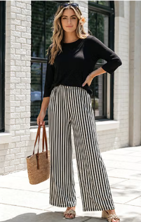
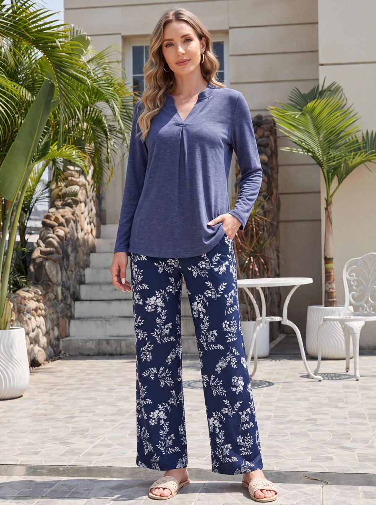
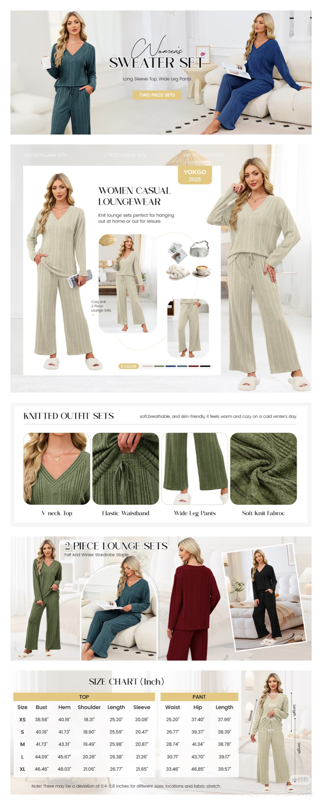
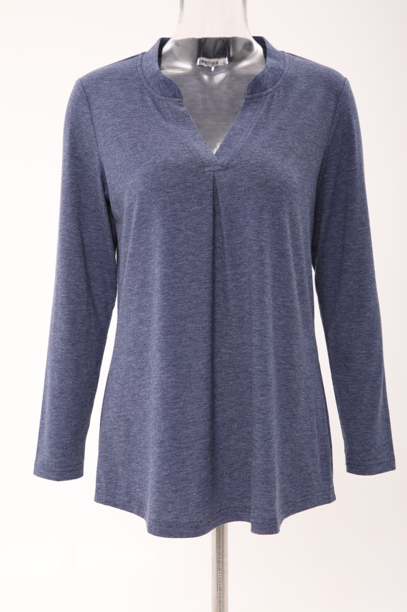
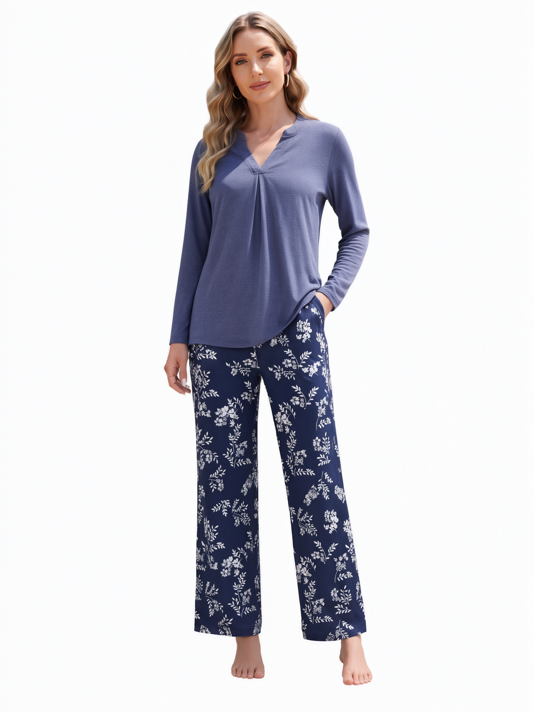
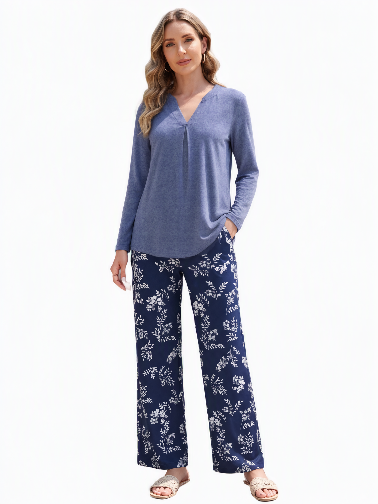
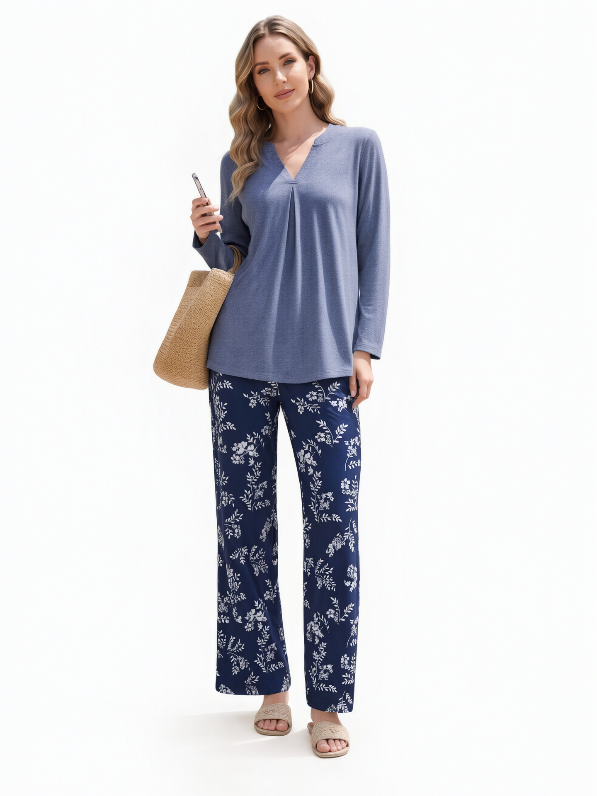

任务：A+ 工作簿 image37 模特穿蓝灰麻灰针织衫 + 藏青白花阔腿裤，出 e-commerce 主图（纯白底）与 A+ 页。README：当前范围=一张主图 + 一张 A+ 图（工作簿还描述了更广的四色六 view brief，以 record 区分）。
做到的程度：主图 A/B/C 三候选——mainC（seed 20261065）对齐 references/pose-reference.png（左手插裤袋）；mainA/B 姿势未绑 pose-reference（违规已补齐）；split V 领/百褶垂坠/hi-lo 下摆/白花阔腿裤逐区 3× 特写核对。A+ 页未制作（工作量：工作簿 308MB + 版式参考排布，为独立工序）。
链路同上。预处理：image37 带场景复杂背景 → sdmatte-matting 抠人 → 贴纯白底（image37_white.png）；服装图=work/garment-composite.png。mainC 姿势条款按 pose-reference 逐要素翻译（左手插袋/肘外弯/右臂垂/微笑）。

pose-reference.png（姿势：左手插裤袋）
length-reference.png（长度）
aplus-layout-reference.png（A+ 版式）
top-reference.jpg（上衣）
mainC = pose-reference（左手插裤袋）· PASS · 推荐候选
mainA · 保持 image37 原姿势（姿势违规·披露）
mainB · 自编持手机+草编包（姿势违规·披露）任务级明文规则逐条核验 + 统一 rubric 八维度评分。及格线：hard gates 全过且 quality_score ≥ 0.70。结论全部来自直接读图实测（find-defects-first + 关键区 2-3× 特写），推断均已标注。
mainA/B 保留作姿势候选披露；mainC 是唯一对齐 pose-reference 的候选。A/B/C 选片由用户定；A+ 页需要单独工序（工作簿解析+版式排布），是否启动待用户指令。length-reference 的衣长逐像素比对未做（比例对照法同 corpus 级无阈值）。